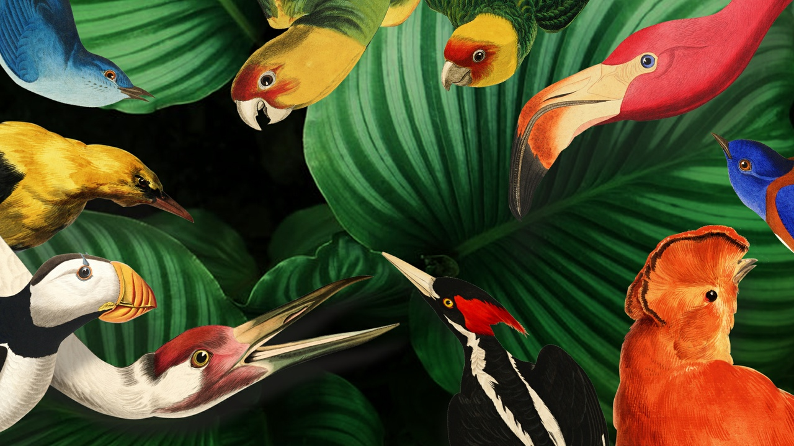

Vogelpracht
Een vlucht door Teylers vogelcollectie
t/m
Stap binnen in een bonte volière, ontdek de mooiste vogelafbeeldingen uit de collectie van Teylers Museum en ga op zoek naar de verschillen tussen de vogelwereld vroeger en nu.
Mensen houden van vogels. Ze hebben prachtige kleuren en kunnen zingen en vliegen. Ze worden al eeuwenlang bestudeerd, afgebeeld en beschreven door vogelliefhebbers. De collectie van Teylers Museum op het gebied van vogelstudies is uniek: de bibliotheek herbergt de mooiste boeken en ook in de kunstcollectie zijn prachtige vogeltekeningen te vinden. Tegenwoordig is vogels bestuderen nog steeds een geliefde bezigheid. Geweer en penseel zijn vervangen door camera’s en verrekijkers. We kunnen zelfs met webcams meekijken in nestkasten! Vogelpracht neemt een vlucht door de mooiste vogelafbeeldingen uit de collectie. De tentoonstelling laat je niet alleen kennismaken met de schoonheid en de rijkdom van de vogelwereld, maar toont ook de veranderde biodiversiteit in het vogelparadijs ten opzichte van 200 jaar geleden.
Overal vogels
In zowel de Tentoonstellingszaal als het Boekenkabinet zijn de mooiste vogelafbeeldingen uit de collectie van Teylers Museum te zien, uit publicaties van Buffon, Gould, Catesby, Le Vaillant en Nozeman, maar ook kleurrijke tekeningen van Schouman en Van Trigt. Opgezette vogels van Naturalis maken de vogelpracht compleet, samen met een nieuw werk van de Haarlemse taxidermisten Darwin, Sinke & Van Tongeren. Zij lieten zich inspireren door de iconische flamingo uit The Birds of America van John James Audubon (1785-1851).
Levensechte vogels
In de 19e eeuw gaan onderzoekers voor het eerst zelf de natuur in om vogels te bestuderen. Daarmee veranderen de vogelstudies zichtbaar. Een belangrijk voorbeeld hiervan is The Birds of America, dat vanaf 1827 verschijnt en grote invloed krijgt op de manier waarop vogels worden bestudeerd en afgebeeld. Dit topstuk toont levensechte vogels die zo van het papier lijken te kunnen vliegen: kleurrijke lepelaars langs de waterkant, geelgroene parkieten tussen de blaadjes of spechten in een boom. Het boek, met 435 handgekleurde platen, is een van de grootste en kostbaarste publicaties ooit. Voor het eerst in 13 jaar zijn alle vijf banden op dubbel olifantformaat weer samen te zien. De bladzijden worden gedurende de tentoonstelling wekelijks omgeslagen. Vogelonderzoeker en kunstenaar Audubon zorgde met zijn werk voor vernieuwing, maar in de tentoonstelling is er ook aandacht voor de nieuwe inzichten rondom het ontstaan van The Birds of America, zoals Audubons relatie met slavernij en verdenkingen van fraude.
Activiteiten voor families
Bezoek Vogelpracht ook met je (klein)kind, neefje, nichtje of buurkinderen. Stap in de rol van vogelwaarnemer en ga op zoek naar de verschillen in de vogelwereld tussen vroeger en nu. Bioloog en presentator Camilla Dreef, ambassadeur van de Vogelbescherming, legt je op film prikkelende stellingen voor. Stem en denk mee over vogeldiversiteit en vogelpracht nu, doe mee aan een workshop of doe de speurtocht.
Vogelpracht wordt gemaakt in samenwerking met de Vogelbescherming en Sovon en kwam tot stand dankzij een legaat van Marjon Rekoert en een bijdrage van het Teylers Museum Vrienden Fonds.